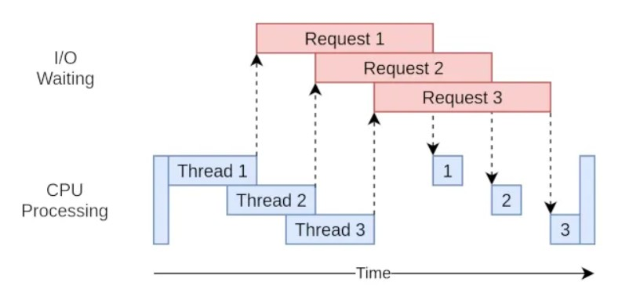

It is common to face some slowness when fetching many data from a big database to perform any data analysis. This slowness might be caused by many factors such as backend overhead (how data are stored, how data are queried...) or saturated network. Nowadays, computers are all multithreaded and multiprocessed so they can perform many tasks at the same time, do you see yourself running something and wait until it finishes to perform other tasks ? Computers are also getting more powerful, with more ram and more CPU cores than before. Most of our usage does not fully use the potential of our computer, so we can use it when really we need it (video games, video encoding, compressing, etc).
In the world of parallelism, it exists 2 primary types: multiprocessing and multithreading.
Multithreading does not offer true parallelism, it is possible to generate multiple threads to do different job together. But every thread cannot run at the same time together.

In the example above, we have created thread to run a asynchronous function to not block on the "Request 1" so the program continue while thread 1 is making any web server request. The program can create another thread to run the same asynchronous function but to request another web request, thread 2 will request the web server without blocking the program. Same thing will happen for the third request. The blocking moment will be to wait those 3 thread to finish to continue the rest of the program.
On a single threaded process, the execution would have looked like this.
Before running the second request, we must wait the first request to finish.
When it comes to multiprocessing and parallel execution, it will look like this.
In the case of parallel execution, both processes run at the same time. The processes are started and then joined to wait for their completion. The processes run independently and complete in any order.
Python, unlike other programming language like C, cannot run thread in parallel due to the limitation of the Python internal function. Python uses the Global Interpreter Lock to restrict access to Python objects and prevents multiple threads to run Python bytecodes in parallel. Therefore using multiprocessing in Python is a better choice for parallelism execution. Creating multiple processes means to allocate several memory spaces and each process will have their own GIL. Each process will execute the Python bytecode without being affected by the GIL.
In general, for lighter tasks, multithreading is faster than multiprocessing since it has less overhead regarding the process creation, therefore, it doesn't need to allocate multiple memory space by the operating system.
A multiprocessing library exists in python to perform parallel execution. The Pool class instantiates the amount of cores we want to use in our python script. The apply_async() method of the Pool class will enable us to call functions in a asynchronous way so every process runs at the same time and the main process will not wait the first child process to finish. The goal is that the processes instantiated by the pool run independently and complete in any order.
Automation has been a hot topic in many projects. Baselining required a significant amount of data to perform some data analysis to understand the normal behavior of the daily and weekly IT activity of a company.
One of the first restriction that I was facing was the limit of data that I can pull from the database.
In this example, the maximum of data that I can pull is set to 1000 events. My current system has 10 CPU cores, if each process run the same function to pull 1000 events, we should be able to fetch 10 000 events.
One important parameter is the offset which indicates the number of data to skip from the beginning. Modifying the offset allows us to not fetch the same data by each process.
Offset: 0 and Limit: 1000 => 1 to 1000
Offset: 1000 and Limit: 1000 => 1001 to 2000
Offset: 2000 and Limit: 1000 => 2001 to 3000
Process 1 will start at offset 0 (0*limit), process 2 will start at offset 1000 (1*limit), and so on...
An error happened when I was trying to perform this parallel execution through multiprocessing.